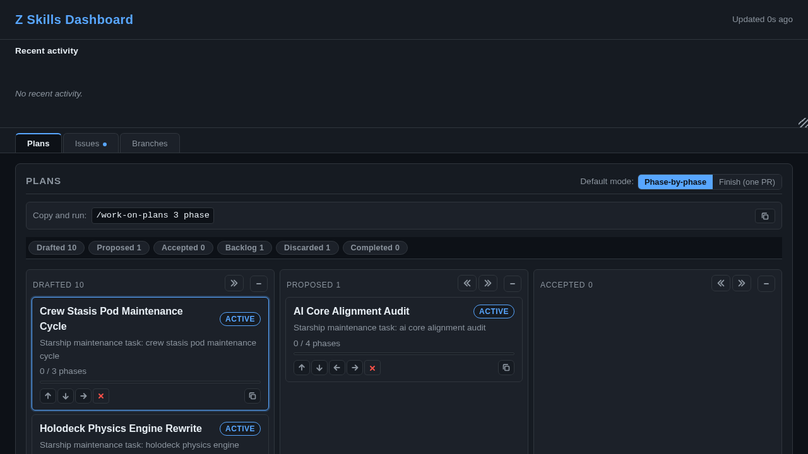

Answer “what is the system doing, what has it done, and what's stuck?”
— without reading git history by hand. This is the observer's guide;
for how the hooks enforce these markers, see
docs/guides/ZSKILLS_TRACKING_OVERVIEW.md.
/zskills-dashboard
serves a normal web UI in your browser — open it and click around; no
Claude in the loop required to read plans, issues, worktrees, and tracking activity..zskills/.
You can verify what a pipeline actually did — phase by phase — with
ls, cat, and grep yourself. The hooks
read the same files to enforce; nothing stops you from reading them to audit.Most confusion comes from conflating two kinds of trail:
Where: .zskills/claims/, current_phase chips, crons, .landed
Lifetime: exists only while a pipeline is in-flight; released/removed at completion.
Answers: “is anything running? is it stuck?”
Inspect with: /briefing, dashboard, ls .zskills/claims
Where: fulfilled.* markers, plan reports, git history
Lifetime: persists across runs; survives clear-tracking.sh.
Answers: “what has this project ever shipped, by which skill, when?”
Inspect with: fulfilled.* queries, /session-report, docs/reports/
High-level, human-friendly views. Reach for these first; drop to the raw files (§2–4) to verify them or go deeper.
| Skill | Shows | Reach for it when |
|---|---|---|
/briefing | worktree status, open checkboxes, recent commits | “where does the project stand right now?” |
/plans | every plan's status + the next ready plan | “what plan should run next / what's blocked?” |
/zskills-dashboard | local web UI: plans, issues, worktrees, branches, tracking activity, drag-and-drop priority queue | you want a live, clickable overview |
/session-report | what this session said it would do vs. what actually shipped (verified vs. git/PRs/plans, not memory) | “did I actually land everything I claimed this session?” |
/briefing — modes & period window/briefing # summary (default)
/briefing report 24h # fuller report over a window (1h|6h|24h|2d|7d)
/briefing verify # verify recent changes hold up
/briefing current # what's in flight
/briefing worktrees # worktree inventory
/briefing every 6h # schedule a recurring briefing (stop / next manage it)/plans — the plan queueThe in-terminal plan view: every plan's status and the next ready plan to run (dependencies satisfied, not blocked, not already in flight). The “what should happen next?” lens — the dashboard below is its clickable web equivalent.
/plans # status of every plan + the next ready one
/plans details # per-plan detail
/plans next # just the next ready plan
/plans rebuild # regenerate the plan indexTwo read-only queue lenses sit side by side. /plans shows the
status of every plan; /work-on-plans (with no args) lists the
prioritized ready queue — the dashboard's drag-and-drop order, read from
.zskills/monitor-state.json (plans.ready) — and
/work-on-plans next shows whether a recurring batch run is scheduled.
Both are read-only until you hand them an action: /plans rebuild
regenerates the index; /work-on-plans N|all [finish] dispatches
/run-plan per queued plan (the execution mode — the bug-side analogue is /fix-issues).
/zskills-dashboard — the browser viewStarts a detached local web server (Python http; port from
DEV_PORT / dev_server.default_port / port.sh)
reading .zskills/monitor-state.json:
/zskills-dashboard start | stop | status | restartThen open http://localhost:<port> in your browser — a
human-readable page you can leave open and refresh to watch a pipeline
progress. restart = stop+start (after code changes).

/work-on-plans copy-and-run line./session-report — the honesty checkReconciles what this session said it would do against what actually shipped — verified against ground truth (git, PRs, plans, worktrees), not conversation memory. Takes no arguments; run it at the end of a working session. It catches the two failure modes memory can't: “I thought I shipped X but the PR never merged,” and “I did finish Y — in another session.” Use it before trusting a session's own summary of itself.
.zskills/tracking/<pipeline-id>/ holds the markers the hooks use
(requires.*, step.*) and the durable
completion records (fulfilled.*). The audit value lives almost
entirely in the fulfilled.* set — plain files you can read to
verify any claim a skill makes.
| Family | Role | Lifetime |
|---|---|---|
requires.<skill>.<id> | a declared obligation (“this skill must run before landing”) | transient |
step.<skill>.<id>.<stage> | progress within a pipeline (implement / verify / report / land) | transient |
fulfilled.<skill>.<id> | a completion record — one per invocation that landed work | durable |
clear-tracking.sh is built around exactly this distinction: it
preserves fulfilled.{run-plan,land-pr,commit,do,fix-issues,quickfix}.*
(the history) and clears everything else (the in-flight scaffolding). After
cleanup, the tracking dir is the completion ledger.
# fulfilled.run-plan.<plan-slug>
skill: run-plan
id: claim-work-item
plan: docs/plans/claim-work-item.md
phase: 4
status: complete
date: 2026-05-30T01:14:24-04:00
# fulfilled.land-pr.<id>
skill: land-pr
id: claim-work-item
pr: https://github.com/<org>/<repo>/pull/825
branch: feat/claim-work-item
date: 2026-05-30T01:14:23-04:00Enough to answer “which plan, which phase, landed via which PR, when” — no git archaeology.
T=.zskills/tracking
# Walk one pipeline's steps in order (implement → verify → report → land):
ls -1 "$T"/run-plan.<plan-slug>/step.*
cat "$T"/run-plan.<plan-slug>/step.run-plan.<plan-slug>.verify # has result: pass
# Confirm it actually completed and landed:
cat "$T"/run-plan.<plan-slug>/fulfilled.run-plan.<plan-slug> # status: complete
cat "$T"/run-plan.<plan-slug>/fulfilled.land-pr.<plan-slug> # pr + dateT=.zskills/tracking
# Everything this project has ever landed, by skill:
find "$T" -name 'fulfilled.run-plan.*' | wc -l # plans completed via /run-plan
find "$T" -name 'fulfilled.land-pr.*' | wc -l # PRs landed via /land-pr
find "$T" -name 'fulfilled.fix-issues.*'| wc -l # issues resolved via /fix-issues
# Which plans actually reached "complete" (not just "started"):
grep -rl 'status: complete' "$T"/*/fulfilled.run-plan.* | wc -l
# Stalled work — a declared requirement with no matching fulfillment:
for r in "$T"/*/requires.*; do
f="${r/requires./fulfilled.}"
[ -e "$f" ] || echo "UNFULFILLED: $r"
done(docs/guides/ZSKILLS_TRACKING_OVERVIEW.md shows how the hooks turn an
unfulfilled requires.* into a commit/push block — the same
signal you read by hand here, enforced automatically there.)
A pipeline claims a work-item before working it (issue or plan) so two pipelines never double-work the same thing — the single best “is something in flight?” signal.
ls -d .zskills/claims/*/ # plan-<slug>/ and issue-<N>/ dirs
cat .zskills/claims/plan-<slug>/claim.json # pipeline_id, current_phase, started_atThe current_phase field is the live progress pointer (e.g.
"Phase 3 — verified") — cat it again later to watch a run
advance. Claims are acquire-on-pickup / release-on-resolve with no TTL
(a lingering claim after a crash is the accepted cost of never killing a
long-running agent), and ownership-aware (a pipeline re-acquiring its
own claim succeeds). Clear a genuinely stale one by hand:
bash skills/run-plan/scripts/claim-plan.sh release <slug> --require-pipeline <pid>
# issues: skills/fix-issues/scripts/claim-issue.sh release <N> --require-pipeline <pid>.landed — per-worktree landing stateWhen a pipeline lands work it writes a .landed marker in the worktree.
It's not a tracking marker — it's worktree-state, and the fastest way to
tell whether a leftover worktree is safe to remove.
status: | meaning |
|---|---|
landed | merged/cherry-picked to main — safe to remove |
pr-ready | PR open, CI green, awaiting review |
pr-ci-failing | PR open, CI failing after fix attempts |
conflict / pr-failed | needs manual intervention |
not-landed | agent finished without landing |
No .landed? Verify manually before removing
(git log main..<branch>, git status) — see Worktree Rules in CLAUDE.md.
For prose detail (per-phase work items, verification results, sign-off items), read the generated reports rather than the markers:
docs/reports/plan-<slug>.md # per-plan, newest phase prepended at the top
docs/reports/SPRINT_REPORT.md # /fix-issues sprint outcomes
<audit-dir>/PLAN_REPORT.md # regenerated index across all plan reports(Paths are config-resolved via output.reports_dir; this project uses
docs/reports/.) Each /run-plan phase prepends a section with
status, commit, work-item table, and verification tally — a phase-by-phase
audit trail in plain English, complementary to the machine markers in §2.
A long finish auto run leaves live signals you can watch (refresh the
dashboard, or cat the files):
current_phase — updates as phases advance (implemented → verified → reported)..zskills/tracking/<pid>/in-progress-defers.<phase>: how many times a chunked cron fire deferred while a phase is in flight (adaptive backoff; see ADAPTIVE_CRON_BACKOFF.md).finish auto run schedules a recurring */1 cron; /run-plan <plan> status shows phase progress, … next shows the next fire, /run-plan stop cancels it (and releases run-plan-held claims).# --- live: what's running now ---
ls -d .zskills/claims/*/ # in-flight claims
git worktree list # active worktrees
for w in $(git worktree list --porcelain | awk '/^worktree /{print $2}'); do
[ -f "$w/.landed" ] && echo "$w: $(grep '^status:' "$w/.landed")"
done # landing state per worktree
# --- durable: what happened (audit by hand) ---
find .zskills/tracking -name 'fulfilled.*' | wc -l # total completion records
grep -rl 'status: complete' .zskills/tracking/*/fulfilled.run-plan.* # plans completed
ls docs/reports/plan-*.md # per-plan narratives
# --- high-level views ---
/briefing # project status
/plans # plan dashboard
/zskills-dashboard start # web UI (then open http://localhost:<port>)
/session-report # this-session auditbash skills/update-zskills/scripts/clear-tracking.sh
sweeps the transient requires.* / step.* scaffolding and
preserves the fulfilled.* completion ledger — run it when the
marker count grows large; your audit history is never touched.
docs/guides/ZSKILLS_TRACKING_OVERVIEW.md — the enforcement model: how markers gate commits, worked examples, troubleshooting.docs/tracking/TRACKING_NAMING.md — authoritative marker naming scheme, delegation semantics, .landed semantics.docs/guides/WORKFLOWS.md — end-to-end workflows (§11 is the short Status & monitoring index this doc expands on).